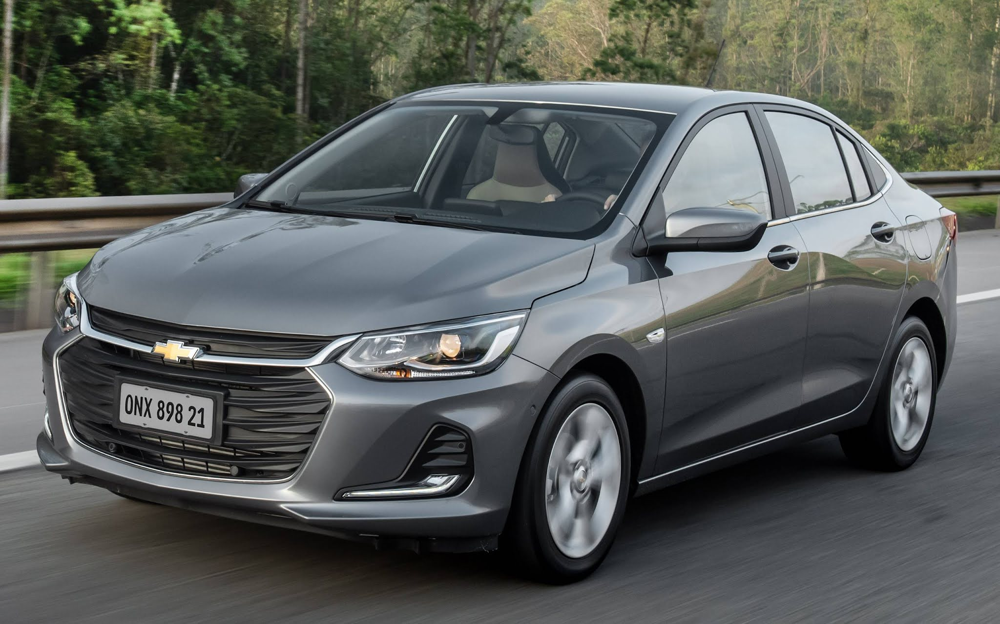

Os 5 Carros Mais Econômicos de 2024
-
1. Renault Kwid 1.0
Eficiência Energética (MJ/km): 1,36
Cidade (etanol): 10,8 km/l
Estrada (etanol): 11 km/l
Cidade (gasolina): 15,3 km/l
Estrada (gasolina): 15,7 km/l
-

2. Chevrolet Onix Plus 1.0
Eficiência Energética (MJ/km): 1,42
Cidade (etanol): 9,3 km/l
Estrada (etanol): 12 km/l
Cidade (gasolina): 13,5 km/l
Estrada (gasolina): 17,4 km/l
-
3. Peugeot 208 1.0
Eficiência Energética (MJ/km): 1,47
Cidade (etanol): 9,6 km/l
Estrada (etanol): 11,1 km/l
Cidade (gasolina): 13,3 km/l
Estrada (gasolina): 15,8 km/l
-
4. Fiat Cronos 1.0
Eficiência Energética (MJ/km): 1,47
Cidade (etanol): 9,8 km/l
Estrada (etanol): 11 km/l
Cidade (gasolina): 13,4 km/l
Estrada (gasolina): 15,6 km/l
-
5. Renault Stepway 1.0
Eficiência Energética (MJ/km): 1,48
Cidade (etanol): 10 km/l
Estrada (etanol): 10,2 km/l
Cidade (gasolina): 13,9 km/l
Estrada (gasolina): 14,7 km/l